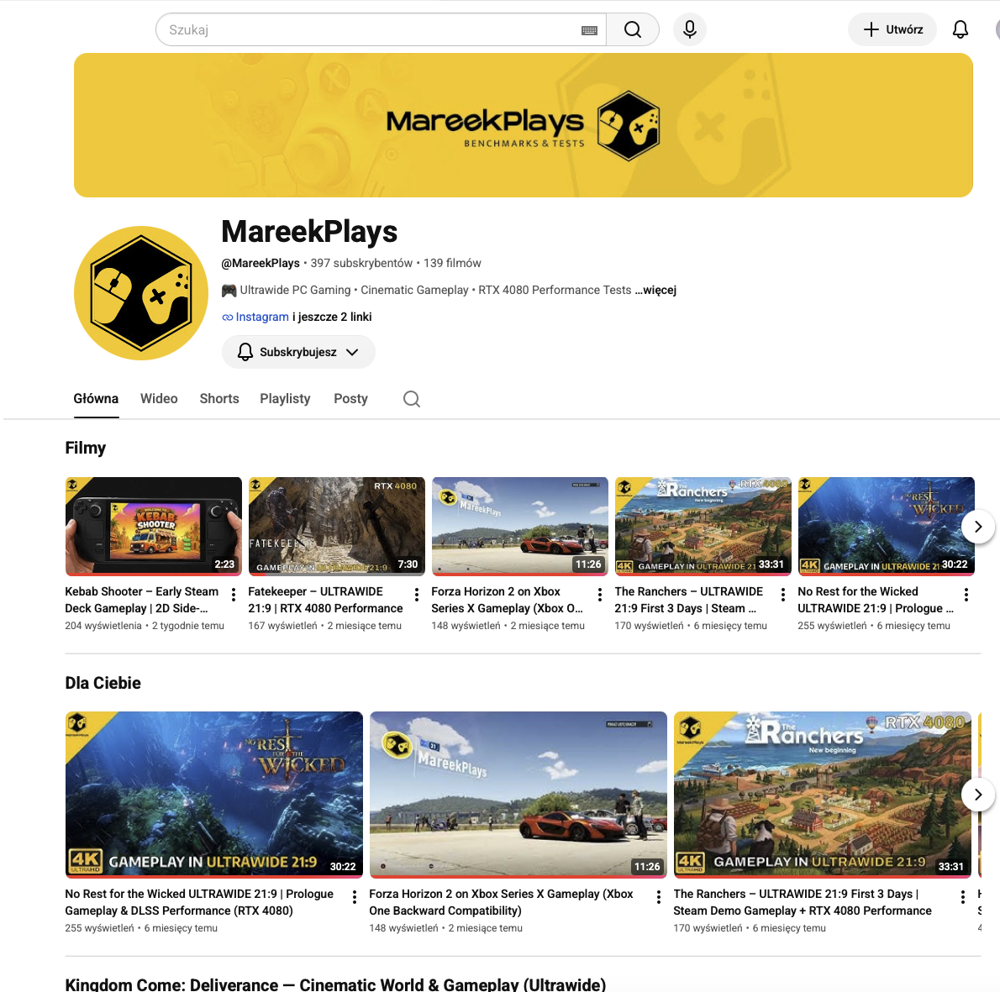
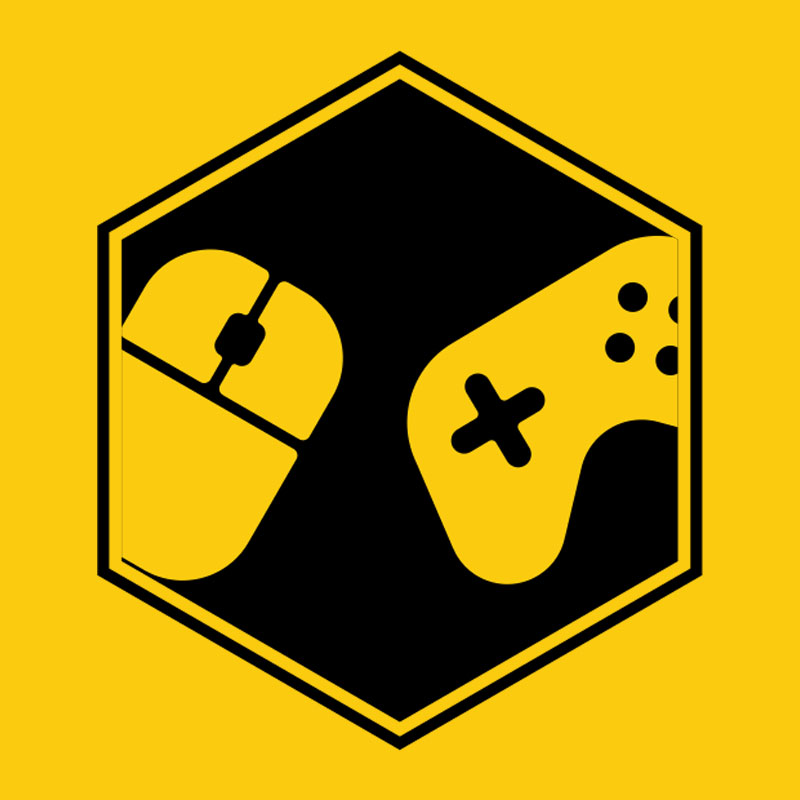
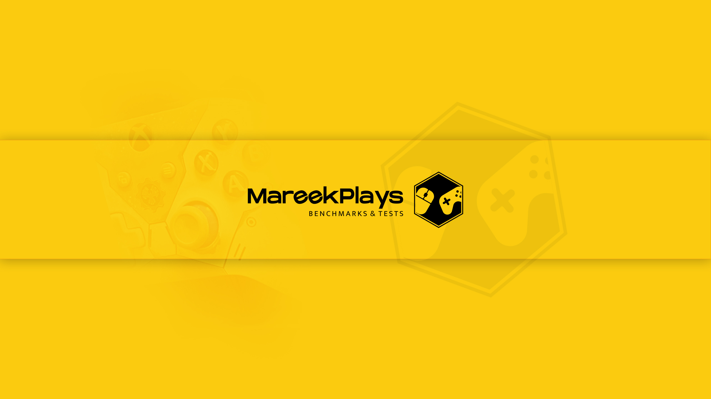
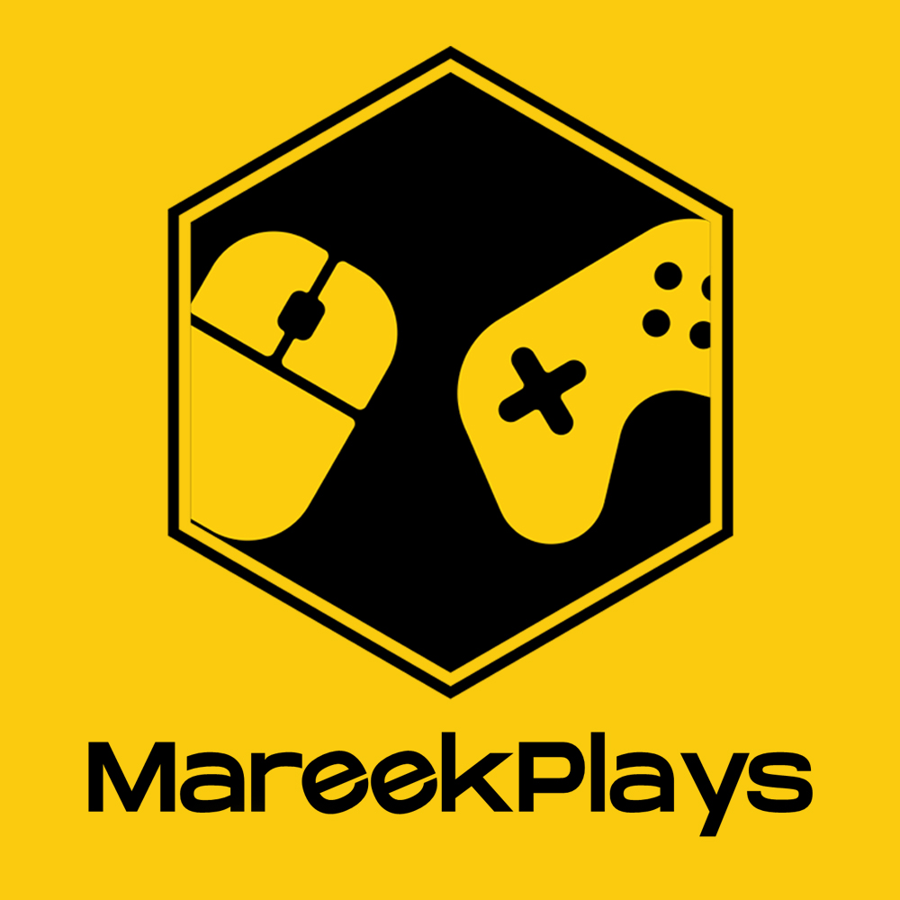
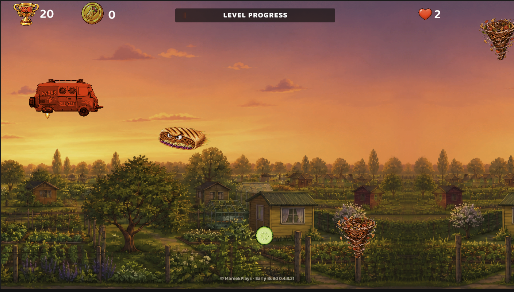

01
Gaming Ultrawide
Światy w rozdzielczości 3440×1440, filmowa kamera i gameplay bez komentarza, stworzony dla pełnego zanurzenia.
Odkryj ↗
MAREEKPLAYS YouTube ↗GAMING • ULTRAWIDE • TESTY WYDAJNOŚCI • TWORZENIE GIER
Filmowy gameplay, rzetelne testy wydajności i rozwijana gra indie — wszystko w proporcjach 21:9.

FORMUŁA MAREEKPLAYS

Światy w rozdzielczości 3440×1440, filmowa kamera i gameplay bez komentarza, stworzony dla pełnego zanurzenia.
Odkryj ↗RTX 4080, DLSS, Frame Generation i ustawienia, dzięki którym współczesne gry pokazują pełnię możliwości.
Zobacz testy ↗
Budowanie Kebab Shooter — od pierwszego prototypu po wersję na Steam Deck.
Poznaj grę ↗
ORYGINALNY PROJEKT MAREEKPLAYS
Szybka, nietypowa i pełna kebabowego humoru strzelanka 2D. Śledź jej drogę od prototypu po kolejne wersje.
Poznaj grę ↗Z KANAŁU
SZYBKIE UJĘCIA
KONTAKT I WSPÓŁPRACA
W sprawie kluczy do gier, recenzji i współpracy napisz na mareekgra@gmail.com.
Niektóre gry mogą być przekazywane przez platformy takie jak Keymailer. Materiały otrzymane w ten sposób oznaczam hashtagiem, a otrzymanie klucza nie wpływa na moją opinię ani sposób prezentacji gry.
Napisz do mnie ↗
OBSERWUJ MAREEKPLAYS
Bądź
na bieżąco.